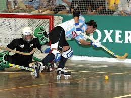

El hockey sobre patines es una forma de hockey que se juega sobre una superficie seca utilizando patines de ruedas. Se puede jugar con patines de ruedas tradicionales ( patines cuádruples) o con patines en línea y usar una pelota o un disco. Combinado, el hockey sobre patines se juega en casi 60 países en todo el mundo. Hay tres variantes principales del hockey sobre patines organizado. El " hockey sobre patines " tradicional (también llamado hockey sobre patines, hockey cuádruple y hockey duro) se juega con patines cuádruples, palos curvos/de caña y una pelota; es un deporte de contacto limitado . El " hockey en línea " se juega con patines en línea, palos de hockey sobre hielo y un disco ; es un deporte de contacto completo, aunque no se permiten controles corporales . El " hockey patinador en línea " es una versión europea del hockey en línea que utiliza una pelota en lugar de un disco. El hockey sobre patines y el hockey en línea se rigen internacionalmente por World Skate , mientras que el hockey sobre patines en línea se rige porFederación Internacional de Patinadores en Línea de Hockey . La mayoría de los juegos de hockey profesional tienen lugar en una cancha deportiva cubierta o al aire libre (un tipo de baldosas de plástico interconectadas que se usan para crear una superficie de patinaje). De lo contrario, se puede usar cualquier superficie seca para albergar un juego, generalmente una pista de patinaje, macadán (asfalto) o cemento.
El hockey sobre patines se juega tanto con patines de cuatro patas como con patines en línea , tiene diferentes reglas y equipos, e involucra diferentes tipos de patinaje, pero comparte la categoría y el nombre del hockey sobre patines. El hockey sobre patines (quad) se juega con patines de cuatro ruedas tradicionales, lo que brinda una mayor maniobrabilidad al jugador; esto da como resultado juegos llenos de juego de pies elegante, maniobras precisas y es más similar al fútbol o al baloncesto. El palo es mas o menos el mismo que en bandy and shinty. El hockey sobre patines (en línea) se parece mucho al hockey sobre hielo y se juega con patines en línea, se usa un palo de hockey sobre hielo e incluye mucha acción rápida de "carreras de ida y vuelta". Los porteros de hockey en línea usan un guante llamado receptor para atrapar los tiros a puerta, y un guante plano, generalmente cuadrado, llamado bloqueador que se usa para desviar los tiros a puerta. El portero de hockey Quad utiliza un guante de bateo plano que proporciona características de rebote al bloquear un tiro al arco.

El hockey sobre patines es una variación del hockey sobre hielo. El hockey sobre patines es el nombre general de un deporte sobre ruedas que existe mucho antes de que se "reinventaran" los patines en línea en los años 70 (en realidad, se inventaron antes que los quads, en la década de 1760). El hockey sobre patines se ha jugado en patines quad , en sesenta países de todo el mundo y también tiene muchos nombres en todo el mundo. A veces, el deporte se denomina quad hockey, hockey con pelota de estilo internacional, hockey sobre patines, hockey sobre patines y hockey sobre pelota dura , según la región del mundo en la que se juegue. El hockey sobre patines fue un deporte sobre ruedas de demostración en los Juegos Olímpicos de verano de 1992 en Barcelona . Desde 2017, los Campeonatos del Mundo se celebran cada dos años en elWorld Roller Games organizado por World Skate . En Inglaterra , 9 equipos juegan actualmente en la Premier League de hockey sobre patines , que se rige por la NRHA .
El hockey en línea es una variación del hockey sobre patines muy similar al hockey sobre hielo , del que se deriva. [4] Se hace referencia a él con muchos nombres en todo el mundo, incluido el hockey con pelota, el hockey en línea, el hockey sobre patines, el hockey con palo largo, el hockey sobre cubierta, el hockey sobre ruta , el hockey callejero y el hockey sobre patines , según la región del mundo en la que se juegue. Al igual que el hockey sobre hielo, el hockey en línea se considera un deporte de contacto ; sin embargo, está prohibido controlar el cuerpo. Es similar al hockey sobre hielo en que se necesita trabajo en equipo, habilidad y agresividad. Con la excepción del uso de patines en línea en lugar de patines para hielo, el equipamiento del hockey sobre patines en línea es similar al del hockey sobre hielo. El juego lo juegan dos equipos, que consta de cuatro patinadores y un portero, en una pista seca dividida en dos mitades por una línea central, con una red en cada extremo de la pista. Cuando se juega de manera más informal, el juego a menudo se lleva a cabo en una superficie lisa de asfalto al aire libre. El juego se juega en tres períodos de 15 minutos o, si es un estándar superior, se juega 20 minutos en cada uno de los tres períodos, más descansos intermedios de 10 a 15 minutos. Las reglas del juego difieren del hockey sobre hielo en algunas formas simples: no hay formación de hielo y se juega en un formato de 4 contra 4 jugadores en lugar de 5 contra 5. El método de tiempo extra utilizado aquí es el gol de oro (también conocido como "muerte súbita") en que quien anota primero es el ganador; 5 minutos es la duración por período. En términos generales, solo el hockey en línea de nivel competitivo está estrictamente sujeto a las reglas del organismo rector. Las ligas recreativas de hockey pueden modificar ciertos aspectos de las reglas para adaptarse a los requisitos locales (tamaño de la pista, duración de los períodos y sanciones). El hockey sobre patines es un deporte en crecimiento con equipos que surgen en todo el país. [5] El hecho de que se pueda jugar sobre cualquier superficie seca hace que se pueda jugar en casi cualquier centro de ocio
Los equipos juveniles de hockey más competitivos juegan en torneos. Los torneos varían según la ubicación, pero generalmente se usa un sistema de soporte típico. World Skate es la asociación internacional que organiza el mayor campeonato mundial de hockey sobre patines de hockey patines y hockey línea. Los campeonatos son parte de los World Roller Games bienales y más de veinte equipos nacionales participan en estos eventos. Para el hockey en línea en los EE. UU., los equipos viajan a diferentes lugares de su estado, a veces incluso saliendo del estado. Hay torneos intraestatales y torneos fuera del estado. Incluso hay torneos nacionales por los que compiten equipos competitivos. Hay otros torneos ubicados en los EE. UU. pero jugados por jugadores de todo el mundo. Narch y Statewars son dos torneos nacionales de todos los niveles y grupos de edad. En Europa, el hockey sobre patines se rige por World Skate Europe - Rink Hockey (CERH), el hockey en línea se rige por World Skate Europe - Inline Hockey (CERILH) y el hockey sobre patines en línea se rige por la Federación Internacional de Patinaje en Línea (IISHF).